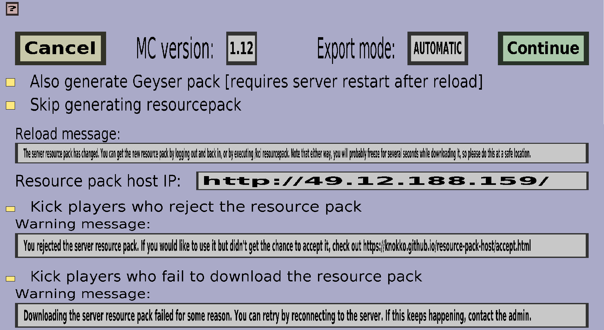

The Export menu is needed to export your items. Exporting means moving your items and textures to your server. In this menu, you can customize the export options and click Continue when you are satisfied. Each of the export options will be explained below. The export menu should look like this:
The minecraft version of your server
The export mode determines how complicated the export procedure will be. The 3 options are:
If you choose Automatic or Mixed, your resource pack will be hosted on a free and shared hosting server provided by me (the author of this plug-in). If you are not satisfied with the network speed of this hosting server, you should choose Manual and host the resource pack yourself, for instance using Dropbox.
The other settings are only applicable when using the Automatic or Mixed export mode.
This message will be broadcasted to all online players whenever the resource pack has been changed.
If you don't want to use the default resource pack hosting server, you can host your own resource pack hosting service and put its IP address or host name here. If you really want to do this, you need to run the resource pack host software on your own host. Note: the default resource pack host should be fine for most people.
Whether the plug-in should kick all players who reject the server resource pack. Enable this if you really want everyone to use the resource pack.
If you do not enable Kick players who reject the resource pack, this message will be sent to all players who reject the server resource pack. Unless you leave this field empty, in which case no messages will be sent.
If you enable Kick players who reject the resource pack, this message will be sent as 'reason' to players who are kicked because they rejected the resource pack.
Whether the plug-in should kick all players who fail to download the server resource pack. This will probably only happen if something is wrong with the server resource pack, so I would only use this if the resource pack is extremely important.
If you do not enable Kick players who fail to download the resource pack, this message will be sent to all players who fail to download the server resource pack. Unless you leave this field empty, in which case no messages will be sent.
If you enable Kick players who fail to download the resource pack, this message will be sent as 'reason' to players who are kicked because they failed to download the resource pack.